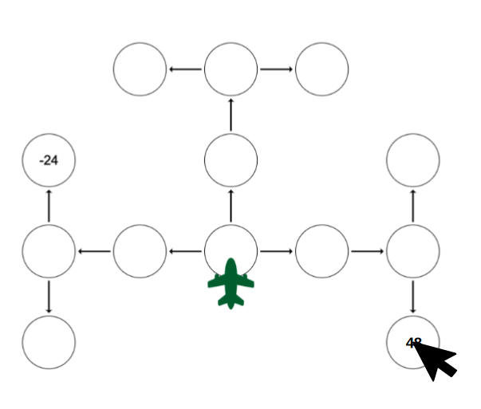

It's hard to make good decision when you can't see what you will get! Fortunately, you will have access to a node inspector which can reveal the value of a node. To use the node inspector, simply click on a node. The image below illustrates how this works.
Note: you can only use the node inspector when you're on the first node as pictured in the image below.
